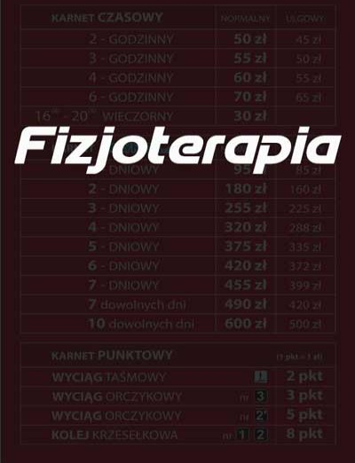
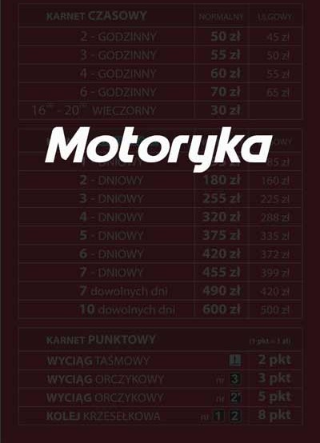
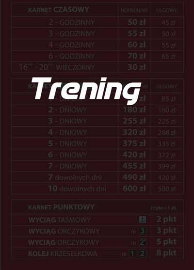

SEMIPRO SPORT
O NAS

Trener przygotowania motorycznego
Filip Kodym
Fizjoterapeuta
Trener personalny
Michał Madejowski
Fizjoterapeuta
Karol Nowak
Jesteśmy grupą pasjonatów przygotowania organizmu do wysiłku. Naszym hasłem i celem jest profesjonalne podejście do sportu amatorów, do rekreacji oraz sportu młodzieżowego ukierunkowanego na przyszłe sukcesy. Osiągnięcie tych celów wymaga od trenera stosowania odpowiednich bodźców w odpowiednich okresach sensytywnych i mogą Państwo tego od nas oczekiwać. Wszyscy zawodnicy trenowani są na podstawie testów funkcjonalnych sprawdzających stopień ruchomości w każdym ze stawów. Zajęcia w Warszawie prowadzimy jako Semi-Pro od 2018 roku. Dyplomowany trener przygotowania motorycznego Filip Kodym jest specjalistą w dziedzinie fizjologii. Trener Michał Madejowski jest natomiast dyplomowanym fizjoterapeutą i specjalistą w dziedzinie masażu oraz treningu personalnego zarówno młodych sportowców jak i dorosłych. Dążąc do jak największego profesjonalizmu, konsultujemy problemy naszych klientów z dietetyk Katarzyną Nadolną.
Nasi partnerzy:

Semi Pro jest potentatem na rynku usług sportowych w Warszawie. Projekt jest dziełem miłośnika fizjologi wysiłku i menedzera sportu Filipa Kodyma. Podsatawowym celem firmy jest dawanie możliwości treningu sportowego, fizjoterapii oraz nauki pływania w najbardziej profesjonalny sposób. W sekcji BLOG mogą Państwo przeczytać nasze liczne puplikacje.
Przygotowanie motoryczne
Młodzi Piłkarze
Trening szybkości, siły oraz wytrzymałości dostosowane do specyfiki uprawianej dyscypliny lub pozycji na boisku.
Ogólnorozwojowy trening młodzieży
Kształtowanie wzorców ruchowych młodzieży z zaburzeniami sprawności ruchowej oraz słabą motoryką. W trakcie kilku semestrów zajęć przywracamy lub budujemy sprawność i prawidłową postawę.
Dorośli
Treningi personalne ukierunkowane na kształtowanie sylwetki lub poprawę sprawności fizycznej prowadzone przez fizjoterapeute.
Fizjoterapia
Korekcja wad postawy
Wiek dziecięcy to okres kiedy możemy jeszcze skorygować kręgosłup, kolana oraz stopy w skuteczny sposób
Młodzi Piłkarze Fizjoterapia
Dbamy o prewencje. Wzmacniamy grupy mięśniowe w taki sposób aby uniknąć kontuzji w przyszłości.
Dorośli Fizjoterapia
Dobra mobilność i stabilność to cele do których dążymy u dorosłych klientów. Fizjoterapeuci rozluźniają, napinają i wzmacniają w zależności od potrzeb.
Trening personalny i dietetyka
Konsultacja Dietetyczna
Prowadzimy każdy proces dbając o prawidłowe odżywianie. Konsultujemy trening naszych klientów z dietetyk Katarzyną Nadolną
Kształtowanie Sylwetki
Trening personalny prowadzimy na siłowni w hali Reduta na OSiR Wola. Podstawą do rozpoczęcia treningu są testy funkcjonalne i nauka prawidłowej techniki ruchu.
Trening Siły Mięśniowej
Sekcja treningu siły to elementy treningu przygotowania motorycznego wplecionego w trening personalny. Zajęcia odbywają się na siłowni przy ul Redutowej 37 w Hali Reduta na Osir Wola.
cennik



Kontakt
DANE FIRMY
Semi-Pro Filip Kodym
Warszawa
NIP: 5272628577
REGON: 381543930
GODZINY PRACY
Poniedziałek-Sobota: 07:00 - 23:00
Niedziela: 9:00 - 19:00
DANE KONTAKTOWE
511336976
motoryka@semipro.pl